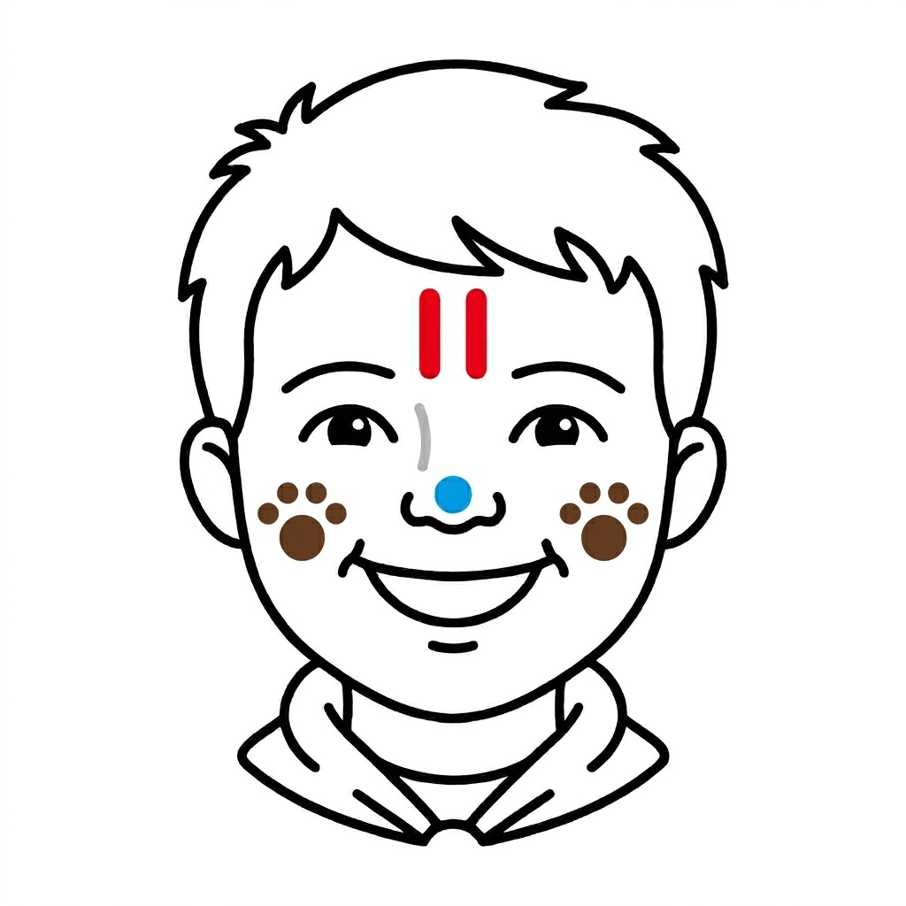

The Speaker's Guide
Narrator: Wolves, you have shown great growth this year. You have learned the strength of the pack and the importance of listening to Akela. You have mastered new skills and shown that you are ready for greater responsibilities.
As you prepare to stand tall as Bears, we recognize your milestones.
First, we place two red bars upon your forehead. These represent the strength of your character and the courage you show when things get tough. They are the marks of a leader.
Next, we place brown tracks upon your cheeks. These are the footprints of the wolf, reminding you that every step you take leaves a mark on the world. Walk with purpose.
Finally, we place a blue dot upon your nose. This represents your sense of direction. Always keep your nose to the wind and follow the path of the Scout Law.
Wolves, your journey continues. Cross over and find your new den!

The Painter's Reference